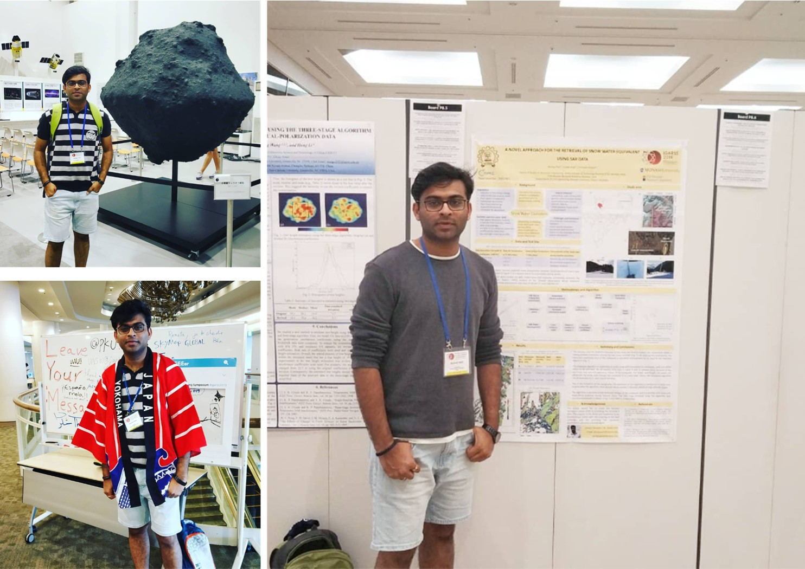
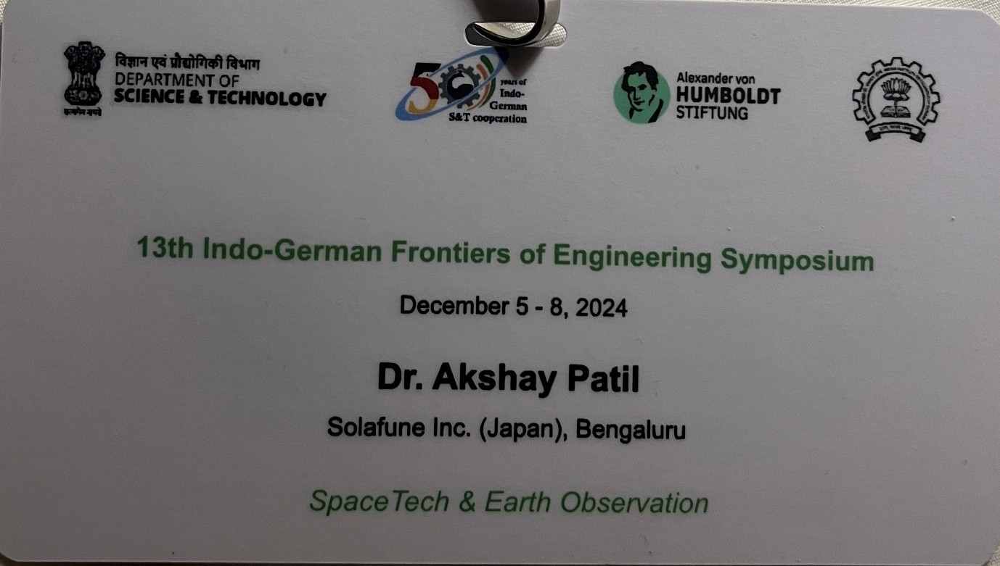
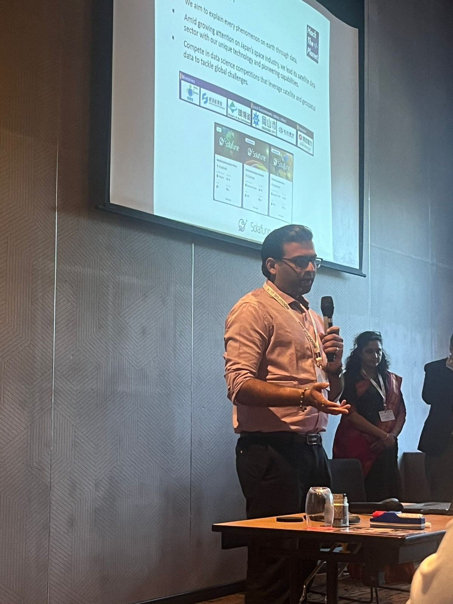
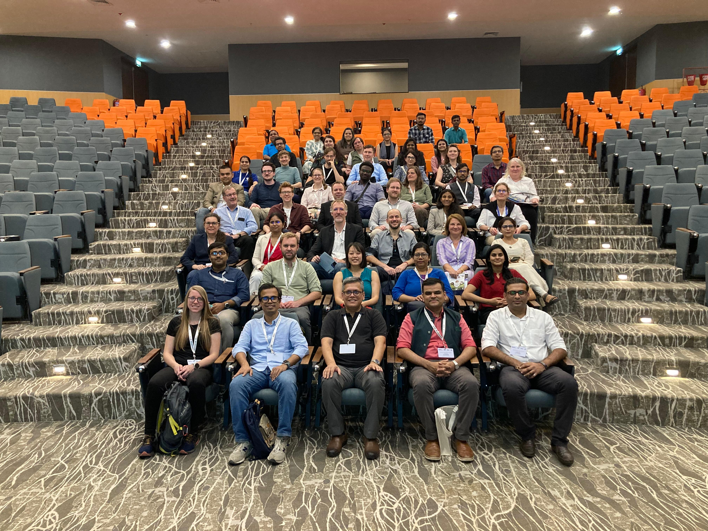
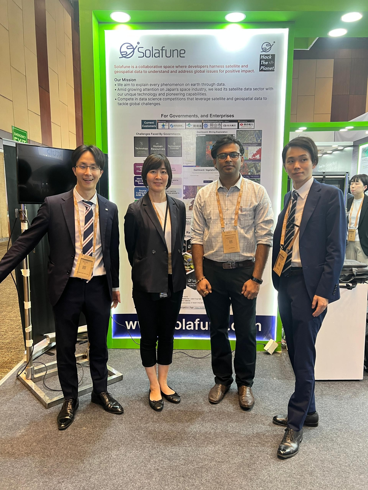
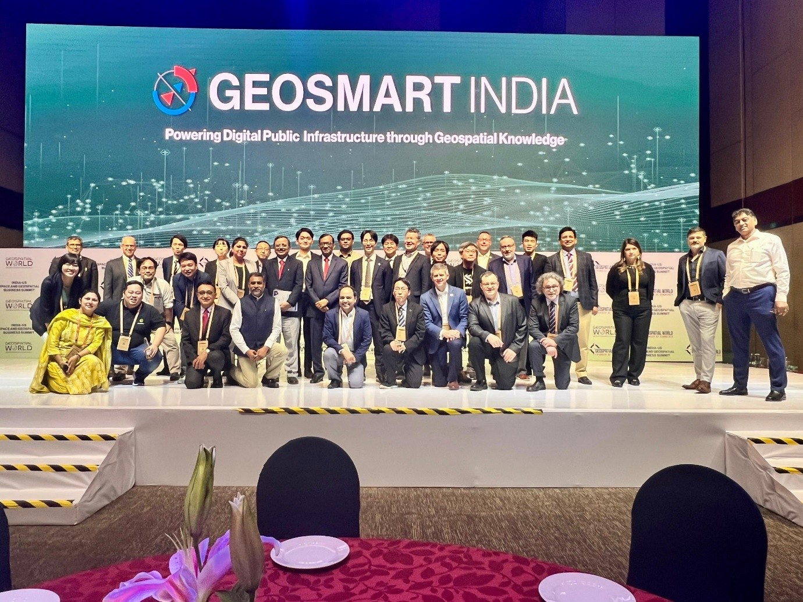
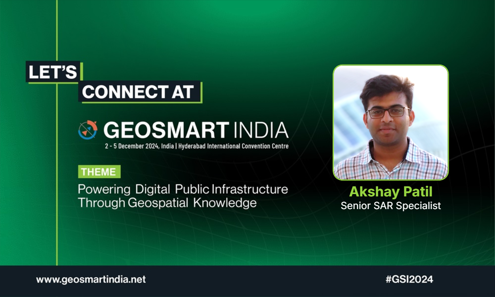
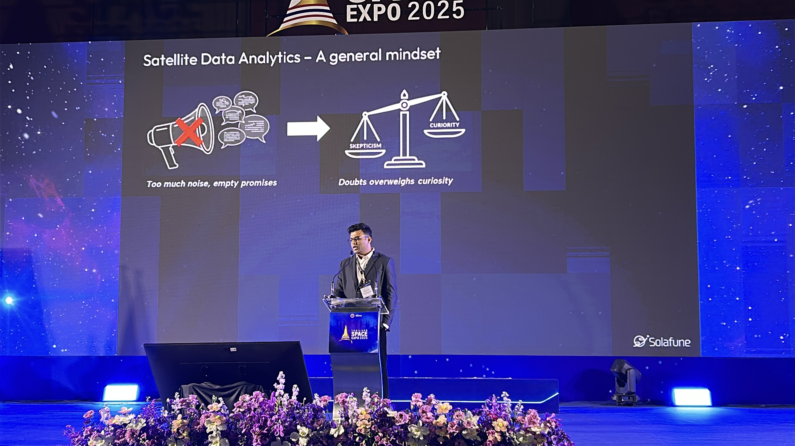

I am a Scientist and SAR Specialist with a PhD (IIT Bombay, Monash University, Australia). My research bridges EO satellite data and machine learning to solve real-world Earth observation problems.
I have developed novel algorithms for Snow Water Equivalent (SWE) retrieval using X- and C-band SAR, contributed to international field campaigns, published in IEEE TGRS and MDPI Remote Sensing, and delivered guest lectures at IITs, VIT, and industry events. Currently, I serve as a Senior SAR Specialist at Solafune Inc.
Presented: SWE Estimation Using Sentinel SAR. Awarded IEEE GRSS Travel Grant to attend and present research on snow water equivalent retrieval methods.

🇯🇵
';" />
2019 · IEEE Travel Grant
IGARSS 2019 — Yokohama, Japan
Presented: SWE Retrieval Using SAR Data. Second IEEE GRSS Travel Grant recipient — showcased dual-polarization SAR results for snowpack monitoring.
2020 · Virtual
IGARSS 2020 — Virtual
Presented 3 papers: Snow Characterization & Avalanche Detection; Surging Glacier Dynamics; Forest Above Ground Biomass. Highly productive year for international contributions.
2019 · Monash Travel Grant
Water Future Conference — Bangalore, India
Attended on Monash University Travel Grant. Presented research on SAR-based snowmelt and water cycle contributions in High Mountain Asia.
2023
WRSC-2023 Workshop — Mumbai, India
Invited speaker on Remote Sensing of Cryosphere. Presented on SAR-based applications for snowpack monitoring and water resource management.



Symposium
Indo-German Frontiers of Engineering Symposium
Selected participant at the prestigious Indo-German Frontiers of Engineering Symposium, bringing together leading engineers and scientists from India and Germany.



2024 · Solafune / JAXA
GeoSmart India 2024
Represented Solafune Inc. at GeoSmart India 2024, showcasing satellite analytics capabilities under JAXA partnership funding.

2025 · Solafune
Thailand Space Expo 2025
Delivered a three-minute pitch for Solafune Inc. at Thailand Space Expo 2025, presenting satellite-based analytics solutions to an international space industry audience.


Connect & Follow